Re‑Elect
Jon DeVille
"Fresh perspective. Strong leadership. County roots."
A modern, service‑driven Assessor’s Office—focused on accuracy, transparency, and respectful customer service for every resident.
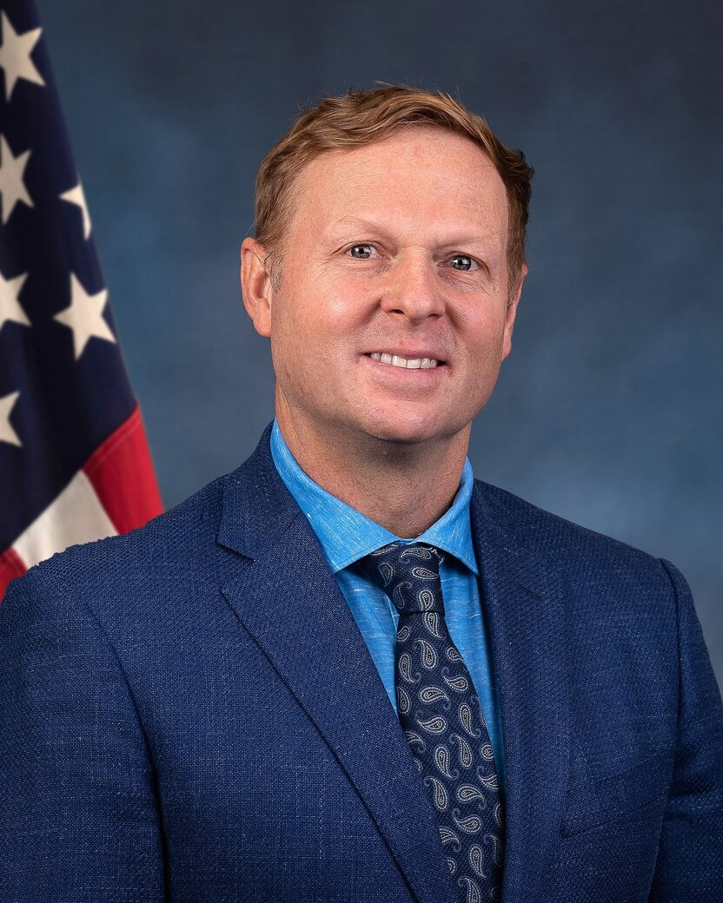
Priorities
Clear goals that keep the Assessor’s Office accurate, accessible, and accountable.
-
Fair & accurate assessments
Protects taxpayers and keeps assessments consistent, transparent, and grounded in the law.
-
Fortune 100 efficiency
Brings private‑sector operations discipline to reduce friction and improve turnaround times.
-
Fiscal conservatism
Responsible stewardship of public funds with a focus on value, accountability, and results.
-
Protect Proposition 13
A strong advocate for taxpayers and the safeguards California voters approved.
-
Friendly service for seniors & veterans
A customer‑service mindset with support for those who’ve served and those on fixed incomes.
-
Rural representation
Ensures county services work for every community—from our cities to our foothills and farms.
First‑Term Results
Delivering fair assessments, outstanding service, and responsible stewardship for El Dorado County.
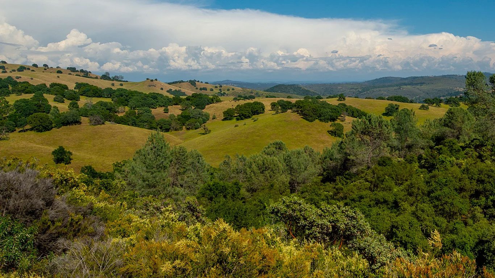
First‑Term Accomplishments
- Improved efficiency, transparency, and service for residents across the Assessor’s Office.
- Modernized online services to better assist property owners.
- Increased participation in the Disabled Veterans’ Exemption Program, saving local veterans hundreds of thousands of dollars in property tax relief.
- Implemented Revenue and Taxation Code Section 155.20 by raising the low‑value property threshold, exempting qualifying property valued under $10,000 from taxation and reducing administrative costs.
- Saved county taxpayers more than $1 million through responsible budgeting and cost‑avoidance measures while maintaining responsive, high‑quality public service.
About Jon
Background and experience.
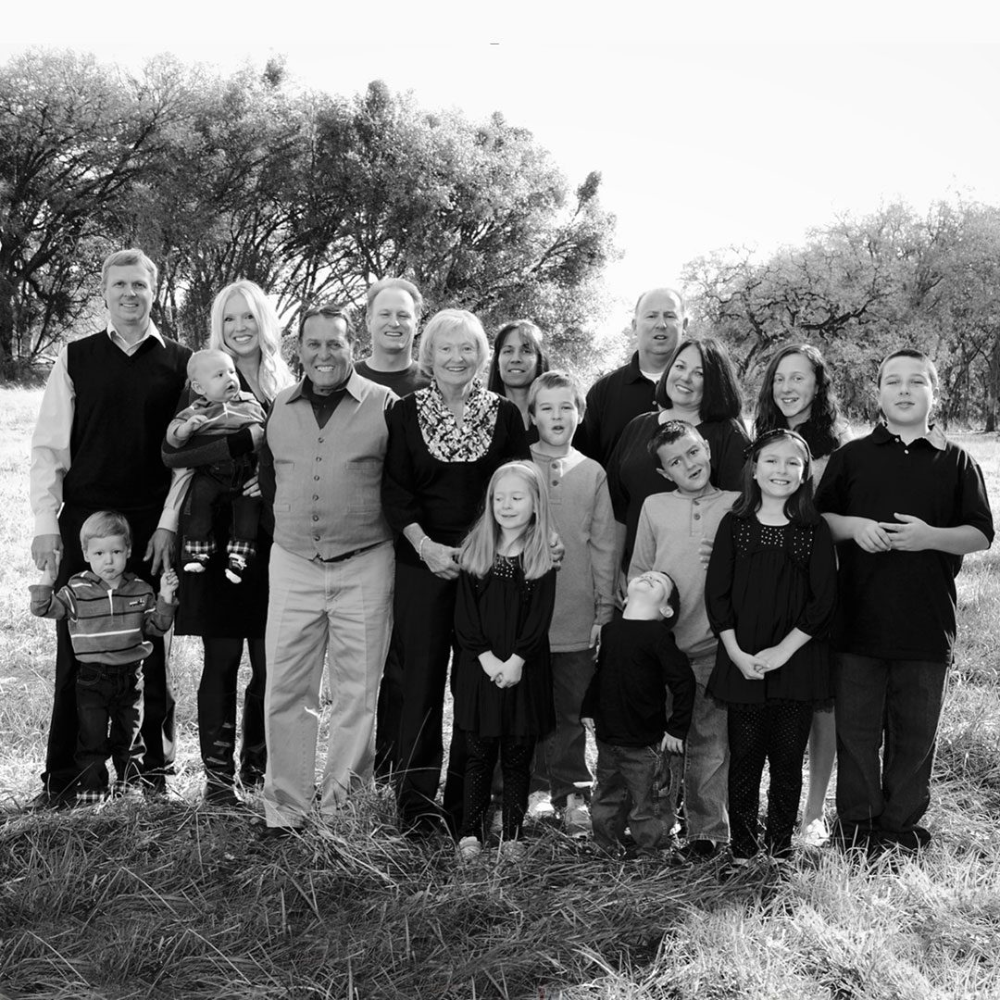
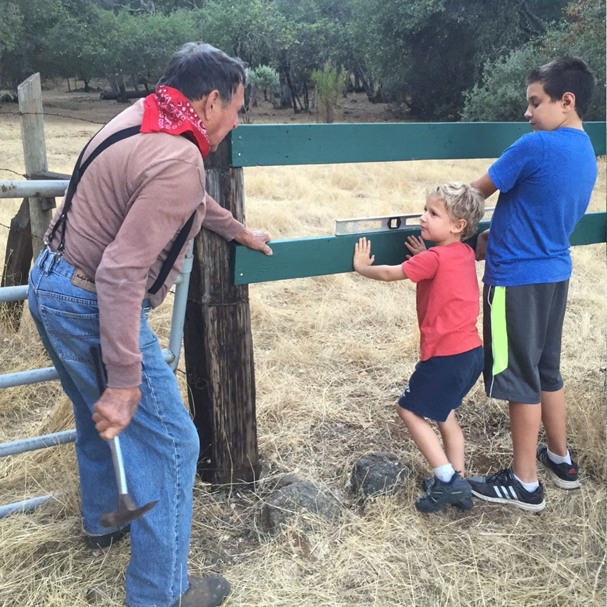
Family and community roots in El Dorado County.
It starts with family...
I am a proud husband, father, son, and brother. My wife and I are both El Dorado County natives. We both received our K-12 education in this county, we were married in this county, and we purchased our forever home in this county. We feel gratitude each day raising our two boys surrounded by golden foothills, heritage oaks and a loving family.
My Role Models
My parents were lifelong educators who dedicated their lives to serving young people in El Dorado County. My mother, Linda, taught special education at Herbert Green Middle School. My father, Tony Sr., (known as Mr. D by his students) was a principal at various schools in the Rescue Union School District for over 45 years. His legacy is honored at Marina Village Middle School with a building that bears his name.
Rescue Farmstead
I grew up in Rescue on a thirty-acre farmstead with my parents and two older brothers, Greg and Tony Jr. We raised cows, chickens, pigs, and dogs. Our family spent many happy years crammed into a double-wide mobile home until my parents could afford to build their dream home on the property. Three generations of DeVilles have enjoyed living on our family property.
Athletics
Growing up on acreage taught me about discipline, hard work, and competition. Those values shaped me as an athlete. I played basketball and football at Jackson Elementary, Marina Village Junior High and Oak Ridge High School. I was also fortunate to earn a scholarship and play NCAA football for four seasons. For nearly a decade, I have served our community by coaching a variety of youth sports teams.
Fortune 100 Experience
I earned my bachelor's degree in Business from Menlo College and my Master of Business Administration degree from San Francisco State University. I began my professional career at Sony Computer Entertainment America (Sony Playstation) in the Procurement and Contracts Unit. I later worked for Oracle Corporation as a Commodity Manager overseeing procurement operations in the United States, Europe, the Americas and Asia.
CFO for El Dorado County Sheriff’s Office
For 9.5 years, I served as Chief Fiscal Officer (CFO) for the El Dorado County Sheriff’s Office where we returned over $20 million in fund balance. I am a member of the California State Sheriff’s Association, Government Finance Officers Association, and the Institute for Supply Management.
Endorsements
A broad coalition of support across community and local leadership.
-
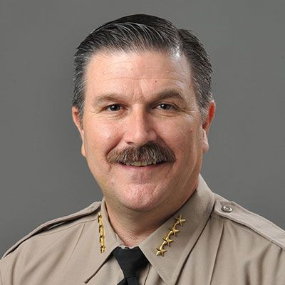
-
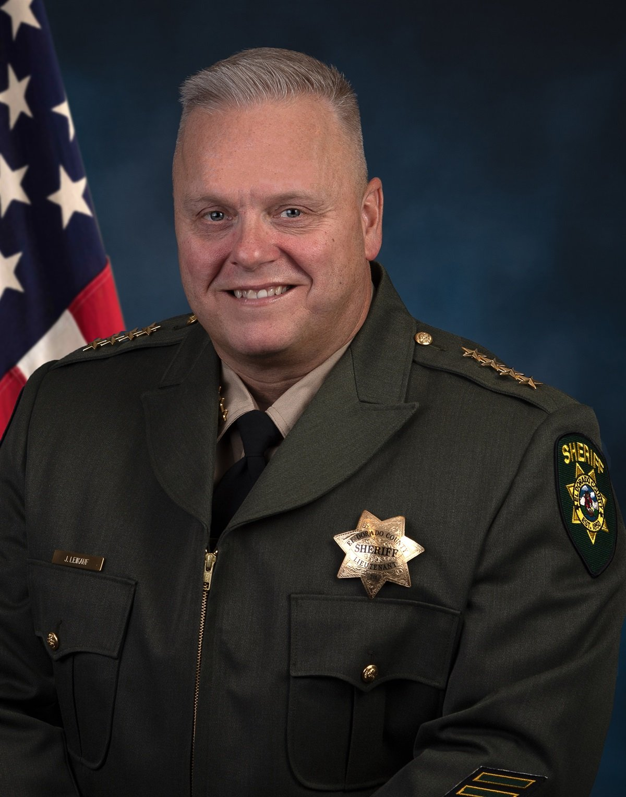
-
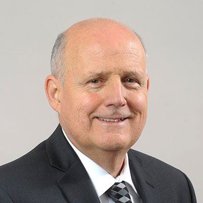
-
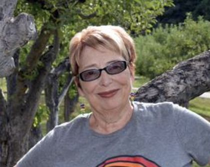
-
-
-
-
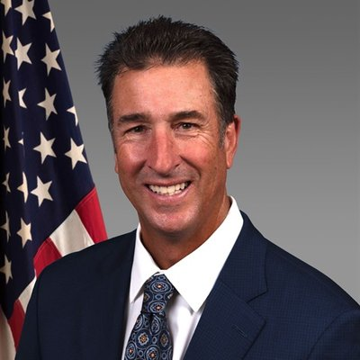
-
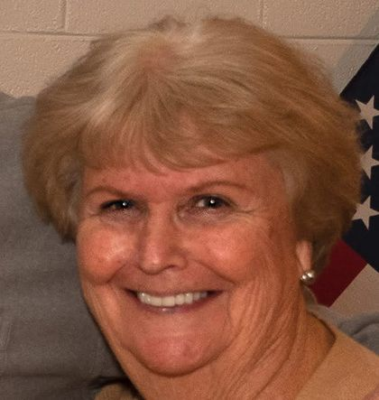
-
-
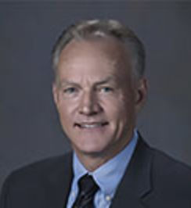
-
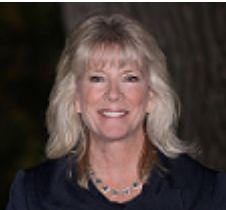
-
-
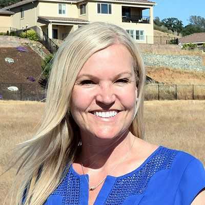
-
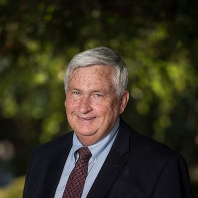
-
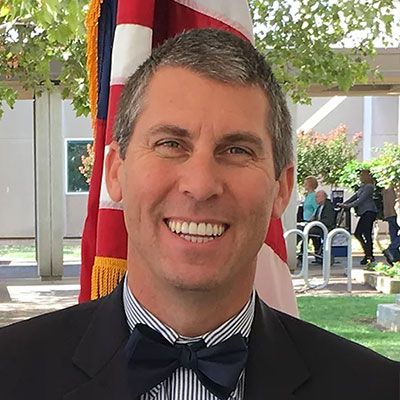
-
-
What neighbors are saying
Use the arrows to browse.
—
A Message from Your Assessor
A personal note from Jon to the residents of El Dorado County.
Read the full message
Dear El Dorado County Residents,
It has been a tremendous honor to serve as your Assessor. When I first asked for your trust, I promised to bring fresh energy and private‑sector discipline to this office while respecting the traditions that came before me. Today, I am proud of what we have accomplished together—and I am humbly asking for your vote once more.
Over the past four years, the Assessor’s Office has improved efficiency, transparency, and service for our residents. Processing times for change‑in‑ownership transfers have been significantly reduced, and online services have been modernized to better assist property owners. Participation in the Disabled Veterans’ Exemption Program has increased each year, saving local veterans hundreds of thousands of dollars in well‑deserved property tax relief.
I implemented Revenue and Taxation Code Section 155.20 by raising the low‑value property threshold, exempting qualifying property valued under $10,000 from taxation and reducing administrative costs. Through responsible budgeting and cost‑avoidance measures, my administration has saved county taxpayers more than $1 million while maintaining responsive, high‑quality public service.
If re‑elected, I will continue delivering fair and accurate assessments and outstanding public service while steadfastly advocating to retain Proposition 13 protections that help prevent steep property tax increases for local taxpayers. My extensive experience in both the corporate world and local government uniquely qualifies me to keep building on this progress. Our residents deserve government efficiency and conservative government spending—and that is exactly what I will continue to provide.
My family and I are lifelong El Dorado County residents committed to integrity, accountability, and responsible stewardship of public trust. I am proud to be endorsed by Sheriff Jeff Leikauf, Assemblyman Joe Patterson, Supervisor Greg Ferrero, and business owner Christa Campbell.
Thank you for your continued support.
Sincerely,
Jon DeVille
El Dorado County Assessor